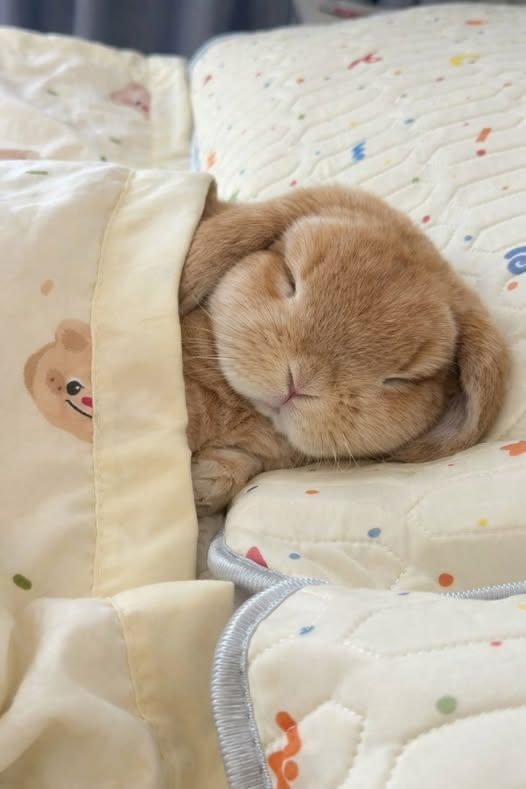

Poradnik dla przyszłych i obecnych opiekunów 🐰

Króliki wymagają codziennej opieki i uwagi. Nie są to zwierzęta „do klatki”. Aby były szczęśliwe i zdrowe, trzeba zadbać o ich potrzeby fizyczne i psychiczne.
Królik musi mieć stały dostęp do świeżej wody i jedzenia. Warto codziennie obserwować jego zachowanie — brak apetytu może oznaczać problem zdrowotny.
Regularne sprzątanie jego miejsca jest bardzo ważne dla komfortu i zdrowia.
Króliki potrzebują dużo miejsca do biegania — najlepiej, żeby mogły swobodnie poruszać się po pokoju lub miały duży wybieg.
Zamknięcie w małej klatce przez cały dzień negatywnie wpływa na zdrowie i psychikę.
Króliki są towarzyskie i potrzebują kontaktu z człowiekiem lub drugim królikiem.
Oswajanie wymaga cierpliwości — nie należy podnosić królika na siłę.
Obserwacja królika to podstawa — zmiany w zachowaniu mogą oznaczać chorobę.
Regularne wizyty u weterynarza są bardzo ważne, nie tylko gdy coś się dzieje.
Warto kontrolować zęby i sierść.
© Świadomy Opiekun Królika